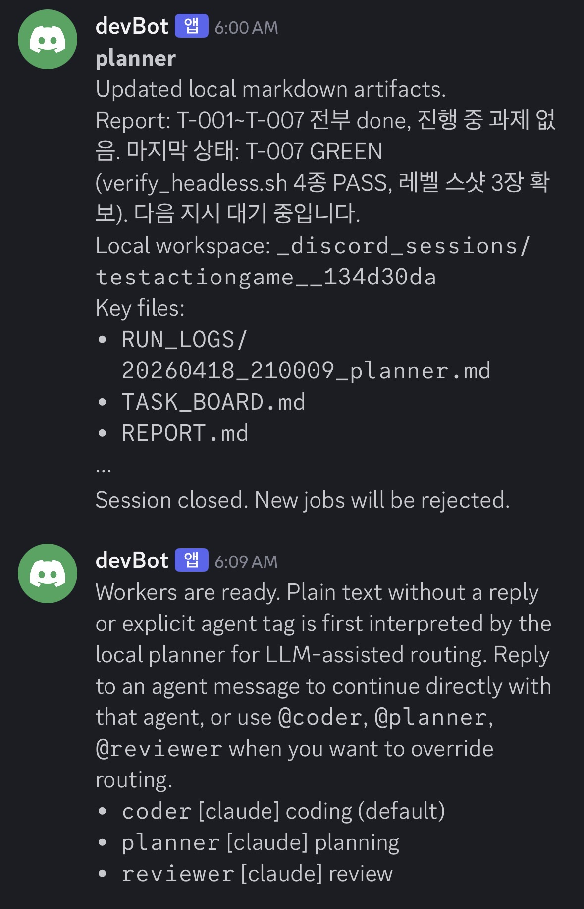
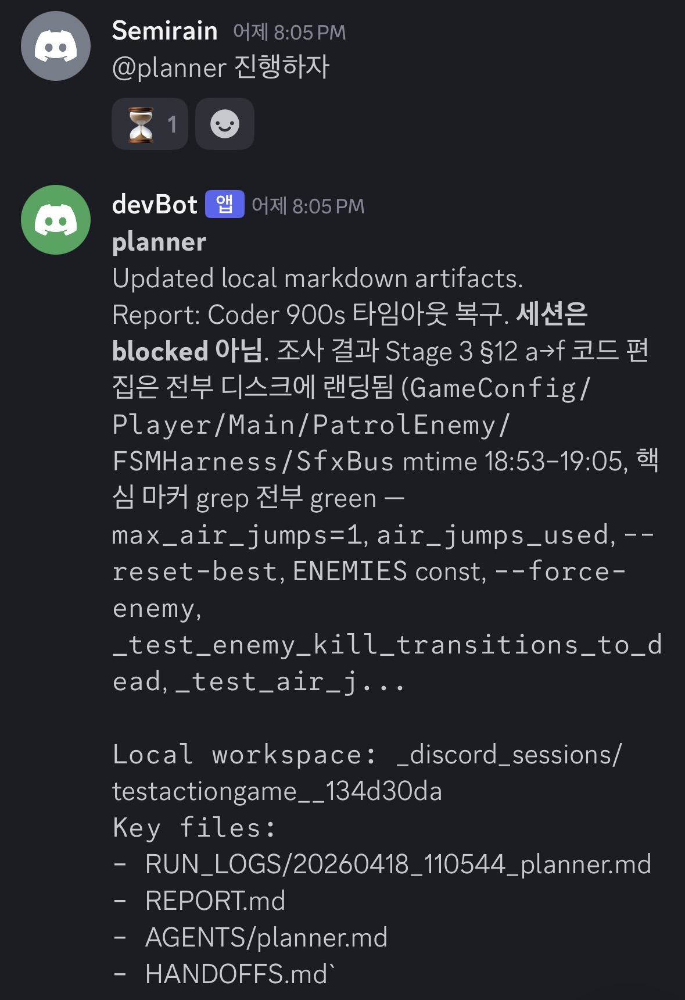

Role
Designed and implemented the bridge-launcher split, session lifecycle, CLI adapter protocol, markdown workspace, and drift-aware worker telemetry.
A Discord-native local agent orchestration framework that splits control and execution into two planes: a NAS bridge for session state and a Windows launcher for local AI workers.
Designed and implemented the bridge-launcher split, session lifecycle, CLI adapter protocol, markdown workspace, and drift-aware worker telemetry.
Local AI CLIs are powerful, but Discord-driven collaboration becomes unsafe and opaque if raw chat can turn into shell execution with no shared state model.
A two-plane system where a FastAPI + SQLite bridge manages sessions, jobs, and transcripts while a Windows launcher reads YAML manifests, claims launches, and spawns one worker per agent.
This pushes agent workflows beyond one-machine experimentation into something a team can control, observe, resume, and safely operate.
The system inserts a control layer between Discord and the local CLI runtime so sessions, routing, and operator visibility stay explicit.
The bridge runs the Discord bot, slash commands, thread creation, SQLite state, worker registration, and transcripts. A key design point is that the bridge never executes Codex, Claude, or any local AI CLI itself.
The launcher stays on the Windows machine that actually has those CLIs installed. It reads project.yaml, registers manifests outbound to the bridge, claims pending launches, and starts one worker process per configured agent.
That separation is what makes the system safe enough to operate. Discord messages do not become raw shell commands. Fixed adapters package structured session context, and results come back through sanitized transcript flow.
The strongest part of Ops-Cure is not just the architecture diagram. In live Discord messages, the workspace path, key files, routing rule, and operator-facing report are all visible as part of the actual workflow.

Session closure, local workspace path, key files, and worker-ready messaging all appear inside the same thread. Plain text is first routed through the planner, and explicit tags like @coder, @planner, and @reviewer can override that route.

Instead of dumping long execution logs into Discord, the planner posts a short operator-facing report plus the local workspace location and the key artifact files such as RUN_LOGS, REPORT, and HANDOFFS.
/project start, /project find, /project status, /project close, agent restart, and session reset all move through the bridge and its session model.CURRENT_STATE.md, TASK_BOARD.md, HANDOFFS.md, REPORT.md, and per-agent notes.codex, claude, and mock adapters prevent Discord input from becoming raw shell execution, while handoff / report / question blocks stay machine-readable.planner, coder, and reviewer agents plus finder roots and prompt files in YAML.